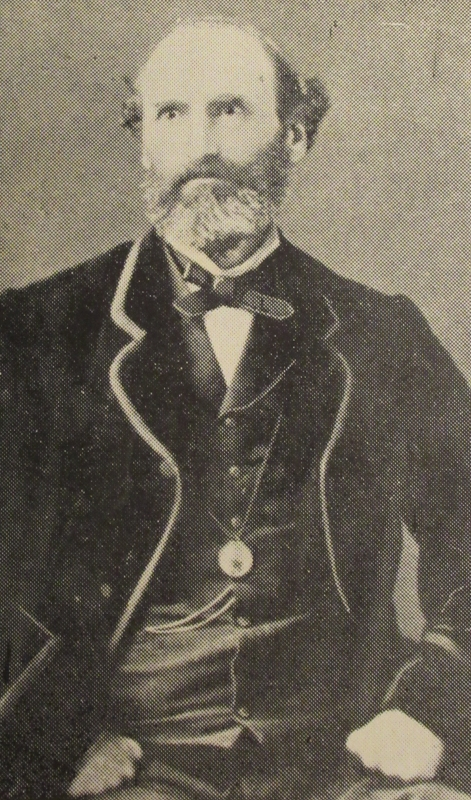

Philippe Langlois - "P.L.", "St.-Luorenchais", "Anglicus"
(22/9/1817 - 19/6/1884)

Ph'lippe Langliais, né l'22 d'Septembre 1817 et mort l'19 dé Juîn 1884, 'tait fis dé Jean Langliais, fis Ph'lippe dé La Maison d'Bas, Coin Tourgis, Saint Louothains, et Marie d'Ste. Crouaix 'tait sa méthe. Les Langliais 'taient d'eune vielle fanmil'ye Saint Louothachaise, et san péthe Jean fut Connêtabl'ye d'sa pâraisse.
Ph'lippe Langliais s'en fut êtudier à Caën épis fit ses êtudes en méd'cinne à Paris pouor san diplôme et continnuit à Londres et à Dublîn où'est qu'il obtînt san MRCS. Savant, et homme dé scienche, lé Docteu Langliais sèrvit sa pâraisse étout comme Député (êlu 1875), et fut élu Juge (Juré Justicier) en 1876. Dans la Milice i' d'vînt Mâjeur et Officyi Médical.
Comme Président pouor 5 ou 6 ans d'La Société Jèrriaise i' fut un grand succés et aîdgit dû à mettre chutte Société sus ses pids, ayant 'té iun des membres fondateurs en 1873. I' fut app'lé l'vrai fondateu du Musée d'Jèrri. Il eut hardi affaithe entouor lé c'menchement du "Glossaire du Patois Jersiais", auve lé Juge A. A. L'Gros et autres. Lé Juge Le Gros et lî d'ailleurs, fûdrent grands anmîns.
I' d'meuthit à La Retraite, La Rue Trachy, Vîngtaine dé La Vallée, Saint Louothains, toute sa vie, et restit vièr garçon. I' n'reste don pon dé d'scendants directs, mais y'a acouo tchiques pathents collatéraux en Jèrri et ailleurs.
I' mouothit en 1884 et Jean Sullivan êcrivit eune "Eslegie" sus sa mort.
Comme poète Jèrriaîs il écrivait hardi d'tchi, pouor sé pâsser l'temps ch'est seux - car nou sait qué pouor châque poésie publiée il en avait p't-être dgiêx fais pus tchi restîdrent en mannuscrit. Lé Juge Langliais êcrivait hardi souos l's innitiales "P. L" tchiquefais comme "St. Luorenchais". Grand lectuthyi, sans doute, i' composait étout en Français et en Angliais.
Lé Sieur Roger Jean Lebarbenchon êcrit dans san livre La Grève de Lecq: "Somme toute, cet auteur-clerc écrivait comme la plupart des Jersiais, pour le plaisir d'employer sa langue et après qu'il eut pris conscience des menaces qui pesaient sur sa culture : il a entendu les Anglais, dit-il, s'moquit du bouan vier jèrriais. Alors, dans la mesure où il a su s' étonner des variations phonétiques de son parler, il eut l'idée, lui aussi, de l'écrire et de l'étudier. Écrire, illustrer, étudier sa langue sont les trois temps d'une démarche cohérente."